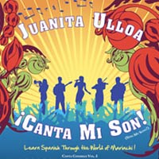
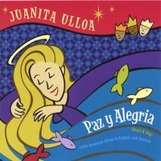
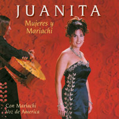

Release Date
Image
Press
Buy
2009

Juanita’s latest CD of music for children, ¡Canta mi son!, has won a National Association of Parenting Products Gold award and a Disney iParenting Media award. Her voice and her music, for children and adults, are amazing!
Juanita has lots of great songs for kids, some of them particularly good for children learning Spanish as a second language.
Her music exposes children to native-speaker pronunciation and has a strong cultural component, as it is closely tied to
the musical traditions of Mexico and other Latin American countries. In addition, in her songbooks for Volumes 1 and 2 of
Canta conmigo there is a teacher/parent guide that has dance, movement, and cultural explanations and
suggestions.- Jennifer of
SpanishPlayground.com
2005

2001
